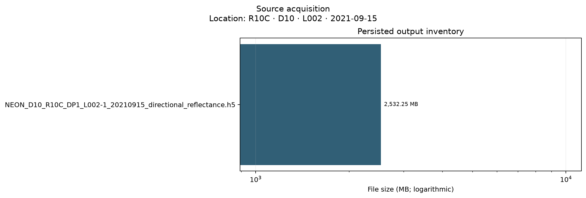

Schema 1.3 · Mode deep
PASS
| Check | Status | Value | Warn / fail | Meaning | Reason |
|---|---|---|---|---|---|
| output_exists:NEON_D10_R10C_DP1_L002-1_20210915_directional_reflectance.h5 | PASS | True | — / — | The canonical stage output exists on disk. |

{
"plot_contract": {
"brdf_coefficient": [
-1.5,
1.5
],
"brightness_adjustment_percent": [
-15.0,
5.0
],
"correction_difference": [
-0.2,
0.2
],
"correction_difference_norm": "symmetric_log_linthresh_0.005",
"display_only": true,
"geometry_radians": [
-0.1,
6.383185307179586
],
"location_label": "R10C \u00b7 D10 \u00b7 L002 \u00b7 2021-09-15",
"negative_fraction": [
0.0,
0.055
],
"reflectance": [
-0.1,
1.6
],
"reflectance_map": [
0.0,
1.2
],
"rgb_reflectance": [
0.0,
0.6
],
"seam_score": [
0.0,
3.0
],
"spatial": null,
"valid_fraction": [
0.0,
1.02
],
"valid_map": [
0.0,
1.0
],
"values_outside_limits_retained_in_metrics": true,
"version": "1.1",
"wavelength_nm": [
350.0,
2600.0
]
}
}
{
"context_fingerprint": "ffb1afa6d8629b529859a9e35686930d400d57f2e660d35d795afe5923199011",
"deterministic": true,
"git_sha": "d88e8d0947718d1e33b534080c224b703987e536",
"package_version": "2.2.0",
"thresholds": {
"chunk_difference_tolerance": 1e-06,
"correction_abs_q99_fail": 0.5,
"correction_abs_q99_warn": 0.2,
"negative_fraction_fail": 0.05,
"negative_fraction_warn": 0.01,
"overbright_fraction_fail": 0.05,
"overbright_fraction_warn": 0.01,
"provisional": true,
"seam_score_fail": 2.5,
"seam_score_warn": 1.5,
"srf_coverage_fail": 0.9,
"srf_coverage_warn": 0.98,
"valid_fraction_fail": 0.7,
"valid_fraction_warn": 0.9
}
}